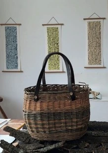

Red Studio

Artistiaid a Gwneuthurwyr: Jo Alexander (cyfryngau cymysg a gwaith coed gwyrdd), Maggie Evans (basgedi) a Lydia Latham (Lluniau, colrosing a llwyau pren)
Artists and Makers: Jo Alexander (mixed media & greenwoodwork), Maggie Evans (basketry) & Lydia Latham (Illustration, kolrosing & wooden spoons).
07929 492056
jo4lexander@hotmail.co.uk
RED STUDIO, TY’N Y CAEAU, CAIM, PENMON LL58 8SP
O Langoed - ewch dros y bont, yn syth i fyny’r allt. Cymwch y troiad ar y chwith wrth y cyffordd ar y top. Cymwch y troiad cyntaf i lawr yr allt. Dilynwch y ffordd pengaead heibio arwydd Caim. Mae’r stiwdio ar y troad dwbl
From Llangoed - over the bridge, straight up the hill. Go left at the junction at the top. First right down the hill. Follow dead-end road past the Caim sign, you will find the studio on the S-bend.